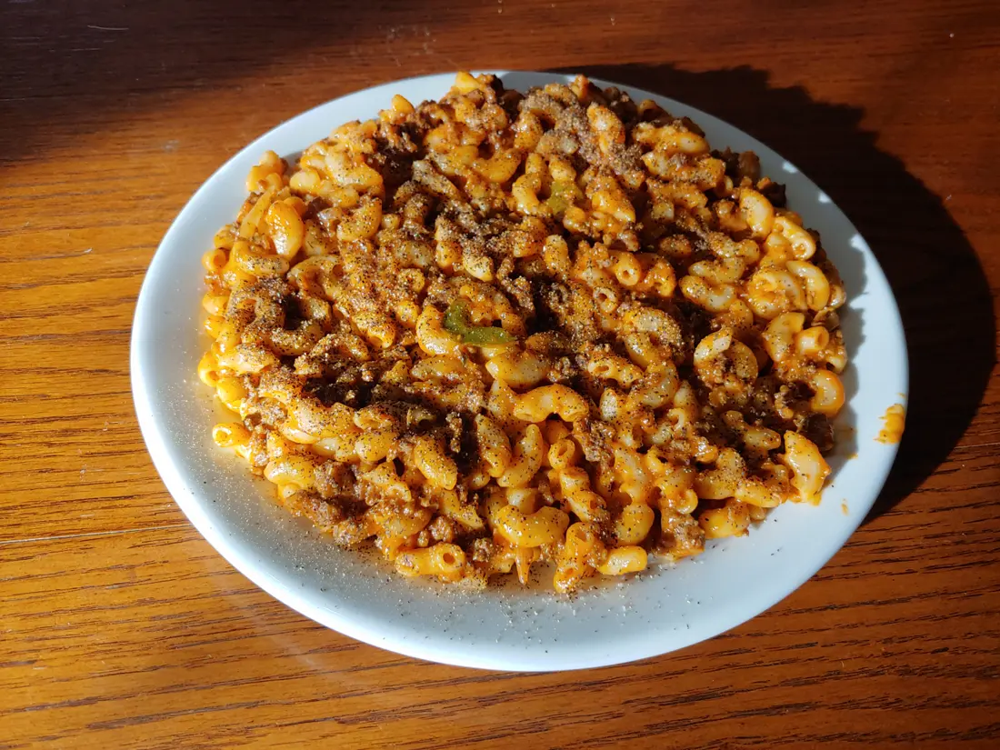

Tomato Flavored Hamburger and Macaroni

This is a based, easy and relatively quick to make meal. Great for making in large batches with a big pot and eating throughout the week.
- ⏲️ Prep time: 15 min
- 🍳 Cook time: 1 hour
- 🍽️ Servings: 6+
Ingredients
- 1kg Med ground beef
- 900g Elbow macaroni
- 4 Cans of tomato soup
- Diced half or full onion
- Diced half or full bell pepper
- Oregano leaves
- Paprika
- Basil
- Sage
- Savory
- Thyme
- Marjoram
- Rosemary leaves
- Garlic salt
- Pink salt
- Onion power
- Frank’s RedHot sauce (optional)
- Mozzarella Cheese (optional)
Directions
- Drop ground beef into large pot on low-medium heat.
- While hamburger cooks, dice onion and pepper while periodically chopping up the beef into smaller pieces with a wooden handle.
- Drop onion and the pepper into the pot with the hamburger.
- Add all of the seasoning.
- Keep cooking until all of the hamburger is brown.
- Once done, find a place to put the pot and keep it warm while you cook the macaroni.
- Cook the macaroni according to this pasta recipe.
- Dump either the macaroni into the hamburger pot or vice versa, the order doesn’t really matter.
- Throw in some cheese which should melt nicely. (optional)
- Pour in the cans of tomato soup.
- Important Stir everything together, make sure the hamburger gets evenly distributed in the macaroni. Make sure to stir right to the bottom so the sauce can reach there too.